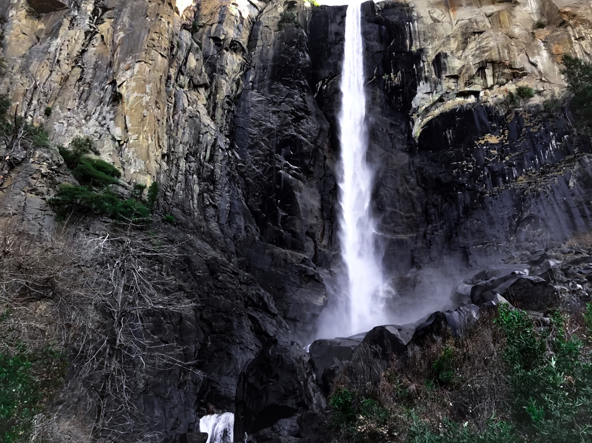

Photography
I don't consider myself a photographer but I definitely enjoy every bit of it. Here are Top 10 of my photos. I use an iPhone for all my photos, but looking forward to get a DSLR soon.
You can jump to any of these photos by clicking on them!
- Letchworth State Park, NY
- Top of the Rock, New York, NY
- Golden Gate Park, San Francisco, CA
- Golden Gate Bridge, San Francisco, CA
- Merced River, Yosemite National Park, CA
- Bridalveil Falls, Yosemite National Park, CA
- Yosemite River, CA
- Somewhere in Yosemite National Park, CA
- Tunnel View, Yosemite National Park, CA
- Muir Woods Redwood Forest, CA
Letchworth State Park, NY

Top of the Rock, New York, NY
Golden Gate Park, San Francisco, CA
Golden Gate Bridge, San Francisco, CA
Merced River, Yosemite National Park, CA

Bridalveil Falls, Yosemite National Park, CA
Yosemite River, CA

Somewhere in Yosemite National Park, CA
Tunnel View, Yosemite National Park, CA
Muir Woods Redwood Forest, CA